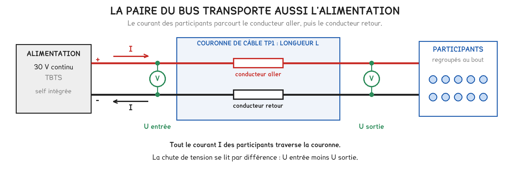
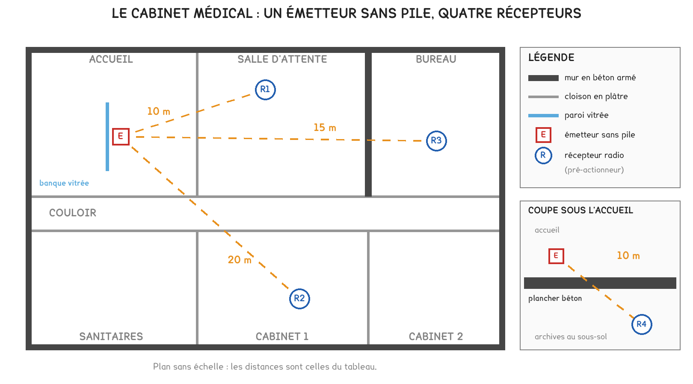
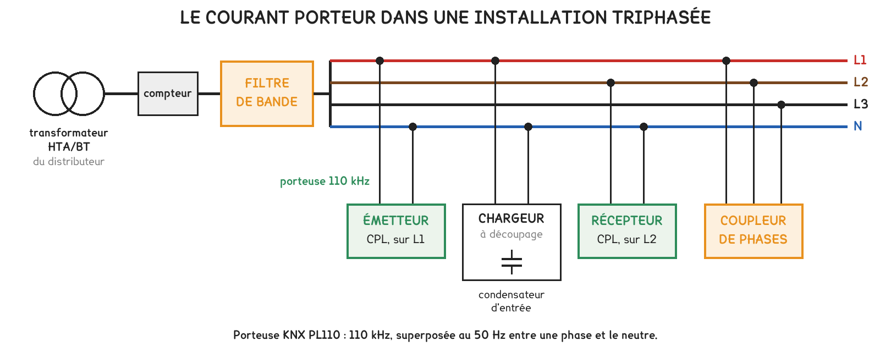
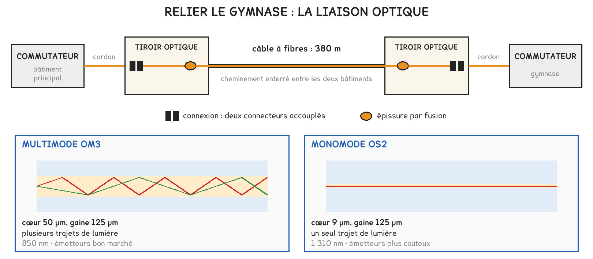
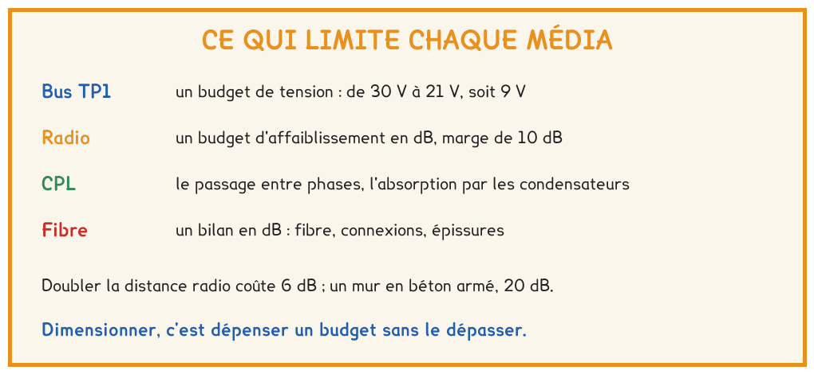

BTS FED option C · 1re année
Quatre médias, quatre budgets. Jusqu'où une liaison fonctionne-t-elle, et pour quelle raison s'arrête-t-elle ? La séance a montré comment compter chaque budget, puis comment le dépenser sans le dépasser.
2 outils · 6 questions · 4 exercices · 4 replis · 6 figures
Savoirs travaillés
La séance 1 a montré comment choisir un média sur trois questions. Celle-ci a ouvert chacun des quatre médias pour chiffrer ce qui limite la liaison. Chaque média dispose d’un budget, et dimensionner une liaison consiste à le dépenser sans le dépasser.
Sur un bus KNX TP1, la même paire transporte les télégrammes et l’alimentation des participants. Le courant parcourt le conducteur aller, puis le conducteur retour : la résistance à prendre en compte est celle de la boucle, 75 Ω par kilomètre.

ΔU = r × I × L
Valable lorsque tout le courant traverse la longueur L, c’est-à-dire lorsque les participants sont regroupés au bout.
La tension part de 30 V et doit rester d’au moins 21 V chez le participant : la ligne dispose d’un budget de 9 V. En charge, après la self de l’alimentation, le bus se mesure autour de 29 V.
Pour aller plus loin
À l’atelier, la chute sur une couronne de 100 m se mesure par différence de deux lectures. Si chaque lecture est connue à ± 0,2 V près, la différence ne l’est qu’à ± 0,4 V près.
Une chute plus faible que cette incertitude ne permet pas de conclure : il faut charger davantage la ligne, jusqu’à ce que l’écart sorte de l’incertitude.
La fiche du câble donne une valeur maximale, qui sert au dimensionnement. Un câble réel à 20 °C présente plutôt 0,069 Ω/m de boucle : la mesure peut donc donner un peu moins que le calcul, sans qu’il y ait d’erreur.
Les affaiblissements rencontrés sur un trajet s’additionnent : celui de la distance, puis celui de chaque paroi traversée. La portée annoncée en champ libre donne le budget de l’émetteur ; une marge de 10 dB se réserve pour les variations de la propagation.
| Distance sans obstacle | 5 m | 10 m | 15 m | 20 m | 30 m | 50 m | 100 m | 300 m |
|---|---|---|---|---|---|---|---|---|
| Affaiblissement, en dB | 45 | 51 | 55 | 57 | 61 | 65 | 71 | 81 |
À ces valeurs s’ajoute l’affaiblissement de chaque paroi traversée.
| Paroi traversée | Affaiblissement |
|---|---|
| Cloison en plaque de plâtre | 3 dB |
| Mur en brique ou en parpaing | 8 dB |
| Mur en béton armé | 20 dB |
| Plancher en béton | 25 dB |
| Vitrage à couche métallique | 20 dB |
Doubler la distance coûte 6 dB ; un mur en béton armé en coûte 20, autant que multiplier la distance par dix.

Une liaison qui fonctionne le jour de la réception n’est pas pour autant fiable : sans marge, elle fonctionnera de manière intermittente. C’est pour la même raison que la portée mesurée à l’atelier se retient au plus court de plusieurs essais.
Pour aller plus loin
Un répéteur reçoit un télégramme et le réémet. Il découpe un trajet trop long en deux bonds, et chaque bond se vérifie séparément, avec sa propre marge.
Contrairement à un interrupteur sans pile, un répéteur écoute en permanence : il doit être alimenté, ce qui guide le choix de son emplacement.
Le CPL superpose au 50 Hz un signal de haute fréquence, 110 kHz pour KNX PL110, injecté entre une phase et le neutre. Il passe mal d’une phase à l’autre sans coupleur de phases, et ne franchit pas le transformateur.

Z = 1 / (2 π f C)
Plus la fréquence est élevée, plus l’impédance d’un condensateur est faible.
Un changement de phase peut interrompre la liaison ; une charge électronique l’atténue. Le diagnostic n’est pas le même, alors que le client décrira les deux cas de la même manière.
Pour aller plus loin
Placé en tête de l’installation, le filtre de bande arrête la fréquence porteuse. Il retient le signal à l’intérieur de l’installation et arrête les perturbations venues de l’extérieur.
Le transformateur arrête lui aussi la porteuse, mais plusieurs installations raccordées au même poste ne sont séparées par rien d’autre que ce filtre.
Le budget d’un module est l’écart entre sa puissance émise minimale et la sensibilité de son récepteur, en dBm. Les pertes de la liaison s’additionnent ; ce qui reste du budget est la marge.

Marge = budget − (fibre + connexions + épissures)
Sur quelques centaines de mètres, les connexions et les épissures pèsent davantage que la fibre.
Pour aller plus loin
La fibre multimode a un cœur de 50 µm et des modules peu coûteux. Sa distance est limitée par la dispersion dès que le débit augmente : 300 m à 10 Gbit/s en OM3.
La fibre monomode a un cœur de 9 µm. À l’échelle d’un site, elle ne connaît pas de limite pratique de distance : 10 km à 10 Gbit/s.
À la réception, une mesure d’affaiblissement supérieure au bilan calculé révèle un défaut, même si la liaison fonctionne. Fonctionner et être conforme ne sont pas la même chose.

Exercice · D1-1
Un local de sport est relié à l’alimentation du bus par 180 m de câble TP1. Ses 30 participants sont tous regroupés au bout de la liaison.
Quelle tension reste-t-il au bout de la liaison ?
Exercice · D1-1
Un émetteur dont le budget vaut 81 dB commande un récepteur situé à 20 m, derrière deux murs en parpaing. Les tableaux de la section sur la radio donnent les affaiblissements.
Quelle marge reste-t-il sur ce trajet ?
Exercice · D2-1
Une liaison en fibre monomode OS2 relie deux bâtiments par 1,2 km de câble. Elle comporte deux connexions et deux épissures.
Quelles sont les pertes totales de la liaison ?
Exercice · D1-1
Un interrupteur radio fonctionnait parfaitement le jour de la réception. Un mois plus tard, le client signale que l’éclairage ne répond plus qu’une fois sur deux. Expliquer ce qui s’est probablement passé, en quatre lignes.
La séance 5 reprend la ligne de bus lorsque les participants sont répartis le long du câble : elle justifie la limite des 350 m, puis organise les lignes en zones reliées par des coupleurs. Elle suppose acquise la relation ΔU = r × I × L.
Cette page rappelle la séance. Elle ne remplace pas le polycopié et ne donne aucun corrigé. Tous les calculs se font dans votre navigateur ; rien n'est enregistré.